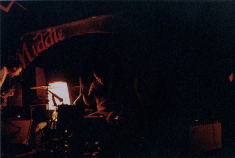
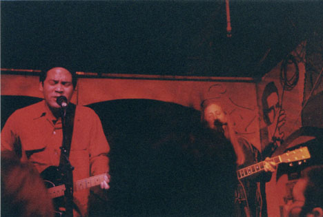
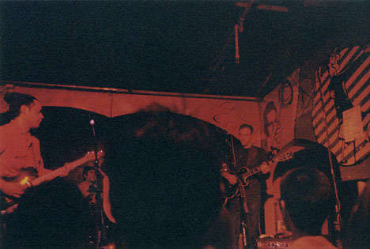
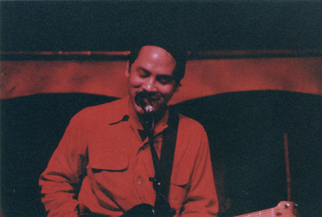
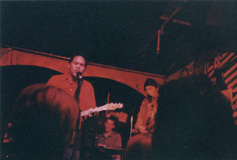
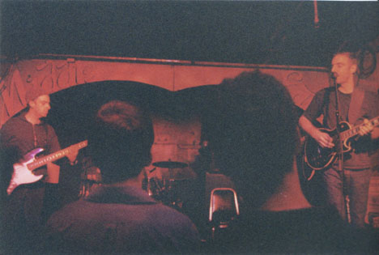
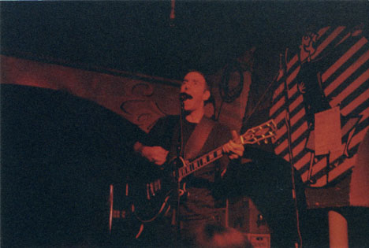
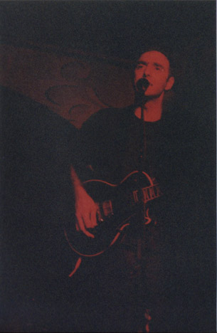

Big Orange Crayonmusical thingsHelms, Ida and Karate at the Middle East, December 15th, 2000 pictures at the bottom! Usually my rule for writing show reviews is that if I don't write it the night of the show or the day after, I don't do it at all. It usually makes sense because I forget things or change my opinion as time goes on or whatever. Here I am twelve days after this show and sitting down to write a review. So what's going on? I don't know, this show was just so awesome and it was such a great weekend, that I just felt I should, even though I had two final exams to study for as soon as I got back and then moving back from school and then the holidays to worry about after that. Anyway. This show kept in the tradition of whenever I see Ida, I have to travel at least a hundred miles to do it. Of course, this show wasn't just about Ida - it was Karate's release show for Unsolved (which is a beautiful album that I've been too lazy to review in the two months since it came out). I've been dying to see Karate for a long time, so I figured I would regret it forever if I didn't go, math classes bedamned. So, after working out the details like where I could stay (thank you so much again, Jodi and Ted and everybody!) I drove to Cambridge, and managed to get there about four hours early despite getting impressively lost once I got into town. But still there were worse things I could have been doing. Heehee and now the actual bit about the show... Helms was the first band to play, and the only one that I hadn't already sunken to the deepest depths of obsessive fandom about beforehand. They turned off all of the lights except for a lamp on the stage and played mostly instumental art rock. By the end of their show I liked them, although it took me quite a while since I didn't really find much to hook onto. I think it was pretty, though. Ida played next, this time doing an all covers concept show. I was ecstatic because they did two Secret Stars covers - "(whisper:heart)" and "Shoe In". It was also the first time I saw them with Miggy on drums, so yay again. It was just a really fun set all together, and it didn't bother me that they weren't doing a normal Ida set like I was afraid it might at the beginning. Other cute moments included Dan trying to coax everyone into doing a Buzzcocks cover and Geoff Farina joining them on stage. They closed with an Ida cover - "Everybody Knows This Is Nowhere". (ok, Brad just pointed out that this is acutally a Neil Young cover, as were most of the songs they played, I'm stupid, ok? =) Karate was the last band to play and they were wonderful. Geoff apologized in advance for a cold he got from running around naked on the beach, but if he hadn't said anything I wouldn't have thought anything was wrong because he (and everyone else) sounded great and played beautifully and enthuiastically. Yayayay. They closed on "This Day Next Year", the last song on Unsolved that is one of those rare songs that go on forever but you still never want them to end. Photographs I took at the show - Yeah they're dark - the guy at the developing place scolded at me for not using fast enough film, but it was ISO 1000, so I couldn't go much higher without getting grains the size of pumpkins. They cut some of them in the wrong places, that's why the Helms one is off center... Helms  Ida     Karate    |